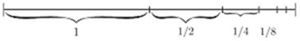
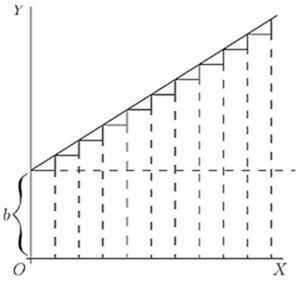
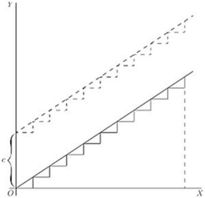
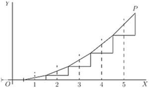
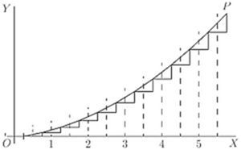
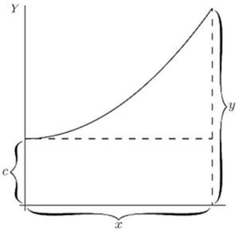

Chapter 19: Chapter XVII. Integration¶
19.1 Chapter XVII. Integration¶
THE great secret has already been revealed that this mysterious symbol , which is after all only a long  , merely means "the sum of," or "the sum of all such quantities as." It therefore resembles that other symbol (the Greek Sigma), which is also a sign of summation. There is this difference, however, in the practice of mathematical men as to the use of these signs, that while is generally used to indicate the sum of a number of finite quantities, the integral sign is generally used to indicate the summing up of a vast number of small quantities of indefinitely minute magnitude, mere elements in fact, that go to make up the total required. Thus , and .
, merely means "the sum of," or "the sum of all such quantities as." It therefore resembles that other symbol (the Greek Sigma), which is also a sign of summation. There is this difference, however, in the practice of mathematical men as to the use of these signs, that while is generally used to indicate the sum of a number of finite quantities, the integral sign is generally used to indicate the summing up of a vast number of small quantities of indefinitely minute magnitude, mere elements in fact, that go to make up the total required. Thus , and .
Any one can understand how the whole of anything can be conceived of as made up of a lot of little bits; and the smaller the bits the more of them there will be. Thus, a line one inch long may be conceived as made up of 10 pieces, each of an inch long; or of 100 parts, each part being of an inch long; or of parts, each of which is of an inch long; or, pushing the thought to the limits of conceivability, it may be regarded as made up of an infinite number of elements each of which is infinitesimally small.
Yes, you will say, but what is the use of thinking of anything that way? Why not think of it straight off, as a whole? The simple reason is that there are a vast number of cases in which one cannot calculate the bigness of the thing as a whole without reckoning up the sum of a lot of small parts. The process of "integrating" is to enable us to calculate totals that otherwise we should be unable to estimate directly.
Let us first take one or two simple cases to familiarize ourselves with this notion of summing up a lot of separate parts.
Consider the series:
Here each member of the series is formed by taking it half the value of the preceding. What is the value of the total if we could go on to an infinite number of terms? Every schoolboy knows that the answer is 2. Think of it, if you like, as a line.

Begin with one inch; add a half inch, add a quarter; add an eighth; and so on. If at any point of the operation we stop, there will still be a piece wanting to make up the whole 2 inches; and the piece wanting will always be the same size as the last piece added. Thus, if after having put together , and , we stop, there will be wanting. If we go on till we have added , there will still be wanting. The remainder needed will always be equal to the last term added. By an infinite number of operations only should we reach the actual 2 inches. Practically we should reach it when we got to pieces so small that they could not be drawn-that would be after about 10 terms, for the eleventh term is . If we want to go so far that not even a Whitworth's measuring machine would detect it, we should merely have to go to about 20 terms. A microscope would not show even the term! So the infinite number of operations is no such dreadful thing after all. The integral is simply the whole lot. But, as we shall see, there are cases in which the integral calculus enables us to get at the exact total that there would be as the result of an infinite number of operations. In such cases the integral calculus gives us a rapid and easy way of getting at a result that would otherwise require an interminable lot of elaborate working out. So we had best lose no time in learning how to integrate.
Slopes of Curves, and the Curves themselves.
Let us make a little preliminary enquiry about the slopes of curves. For we have seen that differentiating a curve means finding an expression for its slope (or for its slopes at different points). Can we perform the reverse process of reconstructing the whole curve if the slope (or slopes) are prescribed for us?
Go back to case (2) on p. 82. Here we have the simplest of curves, a sloping line with the equation 

We know that here  represents the initial height of
represents the initial height of  when
when  , and that
, and that  , which is the same as
, which is the same as  , is the "slope" of the line. The line has a constant slope. All along it the elementary triangles have the same proportion between height and base. Suppose we were to take the
, is the "slope" of the line. The line has a constant slope. All along it the elementary triangles have the same proportion between height and base. Suppose we were to take the  's, and 's of finite magnitude, so that 's made up one inch, then there would be ten little triangles like
's, and 's of finite magnitude, so that 's made up one inch, then there would be ten little triangles like
Now, suppose that we were ordered to reconstruct the "curve," starting merely from the information that  . What could we do? Still taking the little 's as of finite size, we could draw 10 of them, all with the same slope, and then put them together, end to end, like this:
. What could we do? Still taking the little 's as of finite size, we could draw 10 of them, all with the same slope, and then put them together, end to end, like this:

And, as the slope is the same for all, they would join to make, as in Fig. 48, a sloping line sloping with the correct slope . And whether we take the  's and
's and  's as finite or infinitely small, as they are all alike, clearly , if we reckon as the total of all the
's as finite or infinitely small, as they are all alike, clearly , if we reckon as the total of all the  's, and
's, and  as the total of all the 's. But whereabouts are we to put this sloping line? Are we to start at the origin
as the total of all the 's. But whereabouts are we to put this sloping line? Are we to start at the origin  , or higher up? As the only information we have is as to the slope, we are without any instructions as to the particular height above ; in fact the initial height is undetermined. The slope will be the same, whatever the initial height. Let us therefore make a shot at what may be wanted, and start the sloping line at a height
, or higher up? As the only information we have is as to the slope, we are without any instructions as to the particular height above ; in fact the initial height is undetermined. The slope will be the same, whatever the initial height. Let us therefore make a shot at what may be wanted, and start the sloping line at a height  above . That is, we have the equation
above . That is, we have the equation
It becomes evident now that in this case the added constant means the particular value that has when .
Now let us take a harder case, that of a line, the slope of which is not constant, but turns up more and more. Let us assume that the upward slope gets greater and greater in proportion as grows. In symbols this is: Or, to give a concrete case, take , so that
Then we had best begin by calculating a few of the values of the slope at different values of , and also draw little diagrams of them.
When ![StartLayout 1st Row 1st Column x equals 0 comma 2nd Column StartFraction d y Over d x EndFraction equals 0 comma 3rd Column hyphen 2nd Row 1st Column x equals 1 comma 2nd Column StartFraction d y Over d x EndFraction equals 0.2 comma 3rd Column white left pointing small triangle 3rd Row 1st Column x equals 2 comma 2nd Column StartFraction d y Over d x EndFraction equals 0.4 comma 3rd Column white left pointing small triangle 4th Row 1st Column x equals 3 comma 2nd Column StartFraction d y Over d x EndFraction equals 0.6 comma 3rd Column white left pointing small triangle 5th Row 1st Column x equals 4 comma 2nd Column StartFraction d y Over d x EndFraction equals 0.8 comma 3rd Column white left pointing small triangle 6th Row 1st Column x equals 5 comma 2nd Column StartFraction d y Over d x EndFraction equals 1.0 period 3rd Column white left pointing small triangle EndLayout](img/1476.svg)
Now try to put the pieces together, setting each so that the middle of its base is the proper distance to the right, and so that they fit together at the corners; thus (Fig. 49). The result is, of course, not a smooth curve: but it is an approximation to one. If we had taken bits half as long, and twice as numerous, like Fig. 50, we should have a better approximation. But for a perfect curve we ought to take each and its corresponding infinitesimally small, and infinitely numerous.

Then, how much ought the value of any to be? Clearly, at any point  of the curve, the value of will be the sum of all the little 's from 0 up to that level, that is to say, . And as each is equal to , it follows that the whole will be equal to the sum of all such bits as , or, as we should write it, .
of the curve, the value of will be the sum of all the little 's from 0 up to that level, that is to say, . And as each is equal to , it follows that the whole will be equal to the sum of all such bits as , or, as we should write it, .

Now if had been constant, would have been the same as , or . But began by being 0, and increases to the particular value of at the point , so that its average value from 0 to that point is . Hence ; or .

But, as in the previous case, this requires the addition of an undetermined constant , because we have not been told at what height above the origin the curve will begin, when . So we write, as the equation of the curve drawn in Fig. 51,
Exercises XVI. (See page 264 for Answers.)
(1) Find the ultimate sum of etc.
(2) Show that the series etc., is convergent, and find its sum to 8 terms.
(3) If etc., find .
(4) Following a reasoning similar to that explained in this chapter, find ,
(5) If , find .